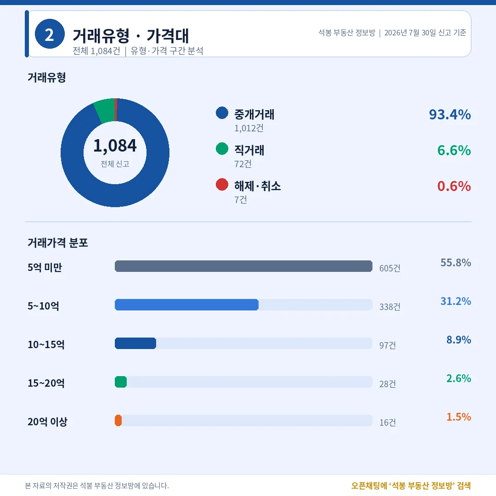
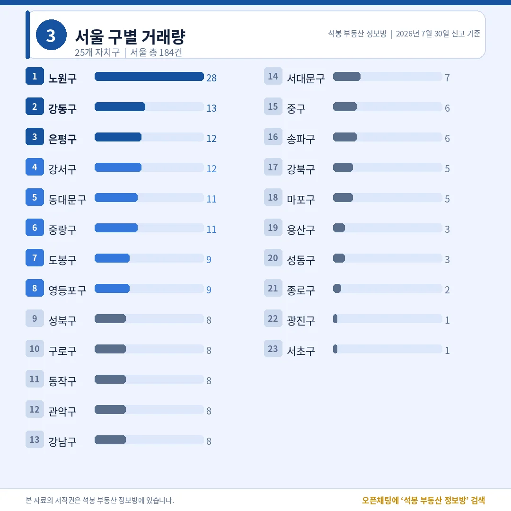
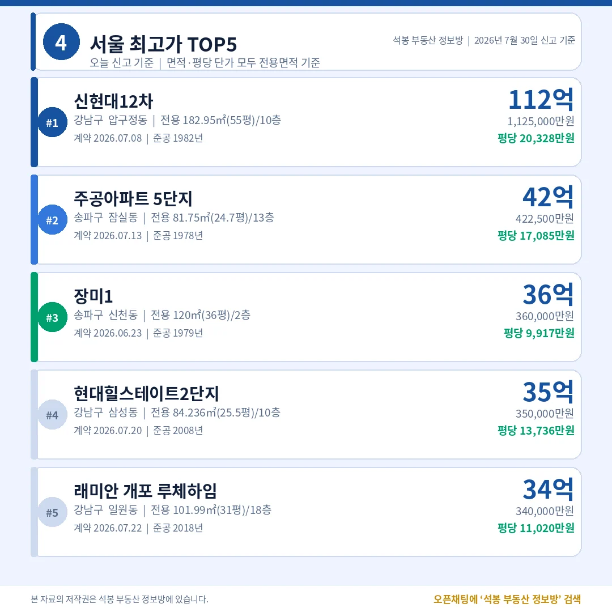
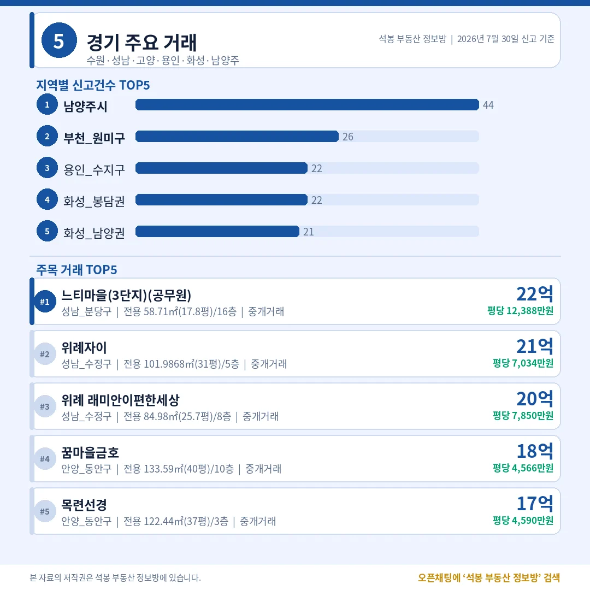
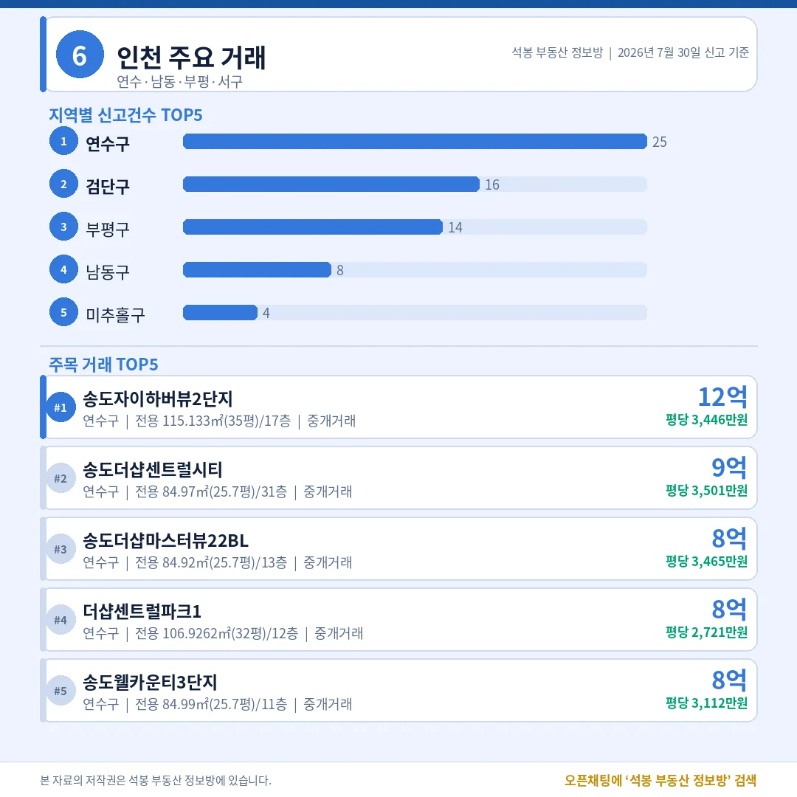
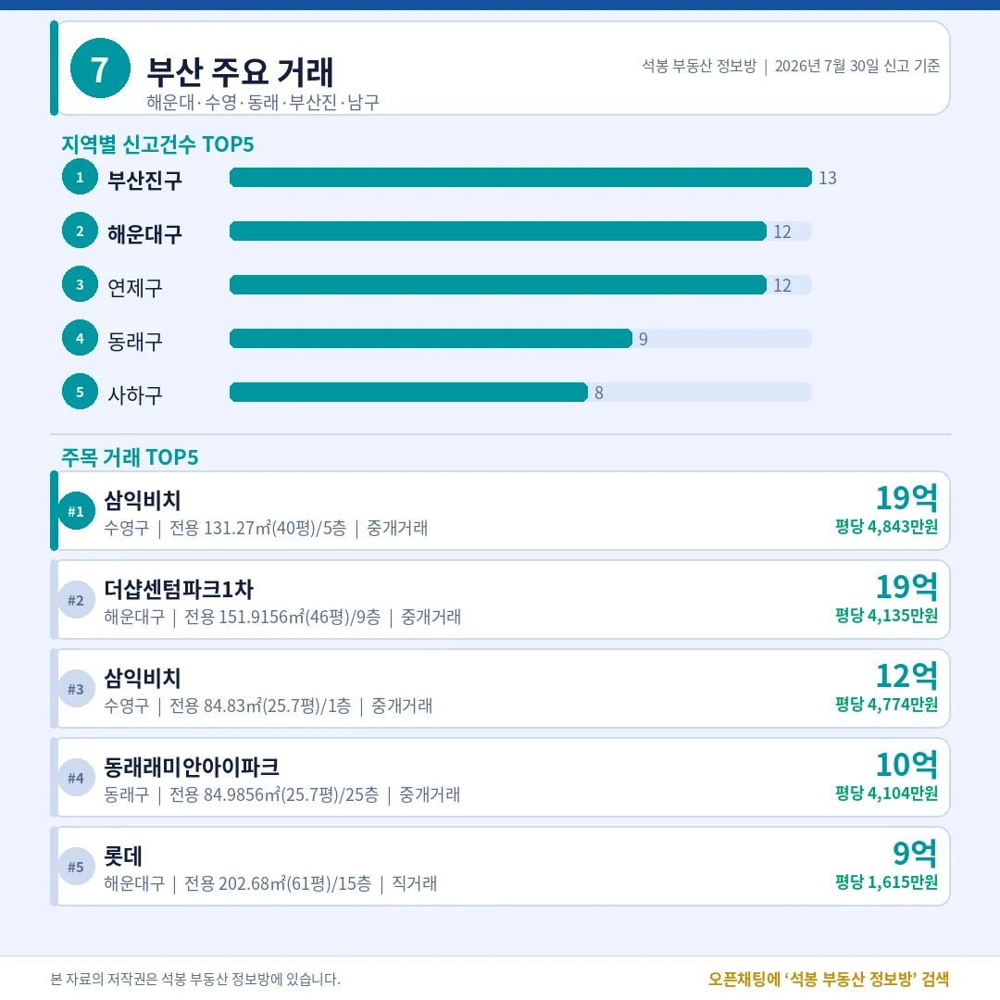
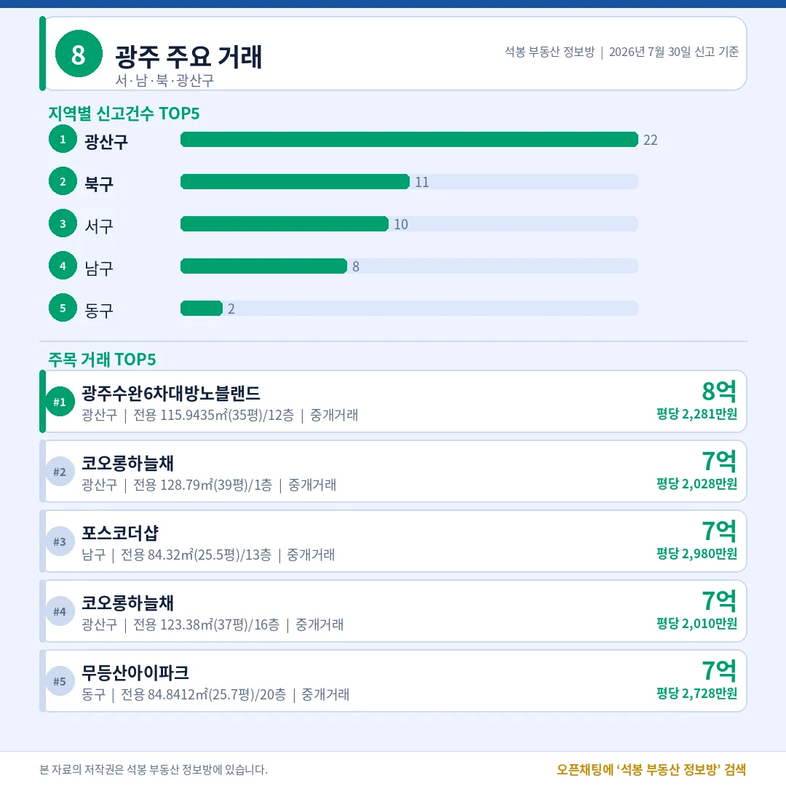
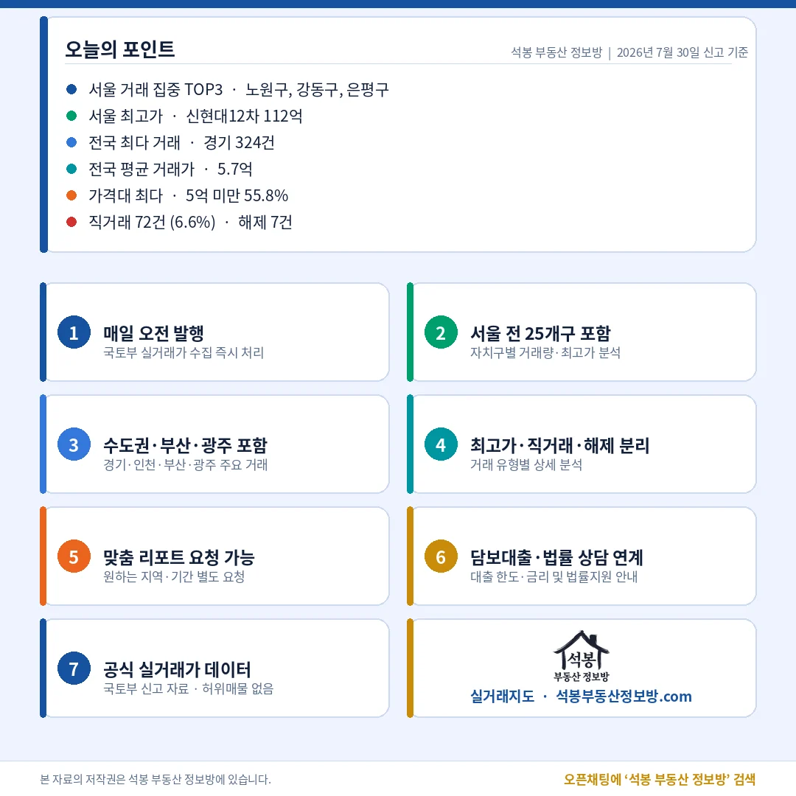

오늘 신고된 전국 아파트 실거래는 1,084건입니다. 서울은 184건으로 전국의 17% 정도에 그쳤지만, 그 얇은 표본 안에서 압구정 112억과 노원 28건이 동시에 나왔습니다. 금액의 최상단과 거래량의 최상단이 서로 다른 동네에서 찍힌 하루였습니다. 숫자로 하나씩 짚어 드립니다.
단지명을 누르면 그 단지의 실거래 내역과 시세를 바로 볼 수 있습니다. (면적·평당 단가는 모두 전용면적 기준)
오늘 시장 한눈에: 직거래 6.6%, 몸통은 5억 아래

거래유형·가격대
전체 1,084건 가운데 중개거래가 1,012건(93.4%)이었습니다. 직거래(중개사를 끼지 않고 당사자끼리 맺은 거래)는 72건으로 6.6%, 해제·취소는 7건(0.6%)에 머물렀습니다. 직거래 비율이 튀면 가족 간 증여성 거래나 기관의 일괄 신고가 섞였는지 따져 봐야 하는데, 오늘은 특정 지역에 몰린 흔적 없이 용인 기흥·부산진·부산 남구에 세 건씩 흩어져 있어 평범한 수준입니다.
가격대는 5억 미만이 605건(55.8%)으로 절반을 넘었고 5~10억이 338건(31.2%)으로 뒤를 이었습니다. 열 건 중 여덟 건 넘게 10억 아래에서 손이 바뀐 셈입니다. 10~15억 97건(8.9%), 15~20억 28건(2.6%), 20억 이상은 16건(1.5%)뿐이었습니다. 전국 평균 거래가는 5.71억. 뒤에 나올 112억 같은 숫자는 시장의 평균이 아니라 아주 얇은 꼭대기라는 점을 먼저 기억해 두시면 좋습니다.
여기서부터는 회원에게 보여드립니다
카카오 로그인 3초면 전문을 읽을 수 있습니다. 무료입니다.
가입하시면 지역 시장조사 보고서(약식)를 2회 무료로 요청하실 수 있습니다.
이미 회원이면 같은 버튼으로 로그인만 됩니다
어디서 거래됐나: 경기 324건, 서울은 노원 독주

서울 구별 거래량
시도별로는 경기 324건이 1위였습니다. 서울 184건, 부산 94건, 인천 80건이 뒤를 이었고 수도권(서울·경기·인천) 합계는 588건으로 전국의 54.2%였습니다. 절반을 조금 넘는 흔한 수준으로, 오늘은 수도권 쏠림이 특별히 강하지도 약하지도 않았습니다.
서울 안에서는 노원구 28건이 단독 1위였습니다. 2위 강동구 13건의 두 배가 넘고, 은평구와 강서구가 12건, 동대문구와 중랑구가 11건으로 이어졌습니다. 노원 28건을 단지별로 뜯어보니 가장 많이 팔린 단지도 2건(전체의 7%)이라 특정 단지 몰아치기나 기관 일괄신고 같은 왜곡은 없었습니다. 상계주공과 하계·월계 구축에 한두 건씩 넓게 붙은, 성격이 뚜렷한 실수요 거래입니다.
반대편을 보면 강남·서초·송파 세 구를 다 합쳐도 15건입니다. 노원 한 곳의 절반 정도죠. 건수는 중저가 벨트가 만들고 금액은 강남권이 만드는 서울의 이중 구조가 하루 단위 데이터에서도 그대로 나타납니다.
오늘의 최고가: 112억, 2위와 2.7배 벌어졌다

서울 최고가 TOP5
서울 최고가 1위는 강남구 압구정동 신현대12차 112.5억(전용 182.95㎡·55.3평, 10층, 1982년 준공)이었습니다. 평당으로 환산하면 20,328만원(전용 기준). 어제 원고에서도 압구정이 상단을 채웠다고 짚어 드렸는데, 오늘은 같은 동네에서 규모가 한 단계 더 큰 대형 평형이 나왔습니다. 계약일은 7월 8일이고, 같은 면적이 7월 4일에도 같은 금액으로 거래돼 이 가격대가 일회성 튀는 값은 아니라는 점이 확인됩니다.
눈여겨볼 지점은 평당 단가의 순서입니다. 3위 장미1의 평당 9,917만원은 2위 잠실주공5단지의 60% 수준이고, 5위 루체하임(2018년 준공, 평당 11,020만원)보다도 낮습니다. 대형 평형은 총액이 커도 평당 단가가 낮게 잡히기 때문인데, 총액 순위와 단가 순위가 이렇게 어긋날 때는 면적을 함께 봐야 값을 오해하지 않습니다.
수도권 밖은 어땠나: 분당 22억, 부산은 남천동 재건축 구축

경기 주요 거래

인천 주요 거래

부산 주요 거래

광주 주요 거래
경기 324건은 남양주시 44건, 부천 원미구 26건, 용인 수지구와 화성 봉담권이 각 22건 순으로 갈렸습니다. 금액 상단은 성남 분당구 정자동 느티마을(3단지)(공무원)22.0억(전용 58.71㎡·17.8평, 평당 12,388만원)이 차지했습니다. 전용 18평이 22억이니 평당 단가로는 서울 강남권 중형과 견줄 수준입니다. 이어 성남 수정구 창곡동 위례자이 21.7억, 위례 래미안이편한세상 20.18억으로 경기 상단은 분당과 위례가 나눠 가졌습니다.
인천 80건 중 연수구가 25건으로 가장 많았고, 최고가도 송도동 송도자이하버뷰2단지 12.0억(전용 115.13㎡·34.8평, 평당 3,446만원)이었습니다. 부산은 94건 가운데 부산진구 13건, 해운대구와 연제구가 각 12건이었지만 금액 1위는 수영구 남천동 삼익비치19.23억(전용 131.27㎡·39.7평, 평당 4,843만원, 1979년 준공)이었습니다. 준공 47년 차 단지가 신축 더샵센텀파크1차(19.0억)를 앞선 건 바다 조망과 재건축 기대가 함께 값에 담긴 결과로 읽힙니다. 광주는 53건 중 광산구가 22건으로 절반 가까이였고, 최고가는 수완동 광주수완6차대방노블랜드 8.0억(전용 115.94㎡·35.1평, 평당 2,281만원)이었습니다.
오늘의 인사이트

오늘 데이터를 한 문장으로 줄이면, 시장의 무게중심과 화제의 중심이 갈렸다는 것입니다. 거래의 몸통은 5억 아래(55.8%)와 노원·강동·은평 같은 중저가 벨트에 있었고, 사람들의 시선을 끄는 숫자는 압구정 112억이라는 단 한 건에서 나왔습니다. 20억 이상 거래는 16건, 전체의 1.5%뿐입니다.
지역별로 보면 경기와 부산에서 각각 분당·위례, 남천동 같은 특정 입지가 상단을 반복해서 채우는 흐름이 관찰됩니다. 값이 오르는 곳은 지역 전체가 아니라 그 안의 몇 개 단지라는 뜻인데, 그래서 시세를 볼 때는 시군구 평균보다 단지별 최근 거래를 직접 확인하는 편이 정확합니다. 총액과 평당 단가, 전용면적을 함께 놓고 봐야 오늘 상단처럼 순위가 뒤바뀌는 경우에도 값을 제대로 읽을 수 있습니다.
자료 출처: 국토교통부 실거래가 공개시스템(2026년 7월 30일 신고 기준, 계약일과 신고일은 다를 수 있습니다) · 면적과 평당 단가는 모두 전용면적 기준 · 편집·제작: 석봉 부동산 정보방 · 본 글은 정보 제공을 목적으로 하며 투자 권유가 아닙니다.